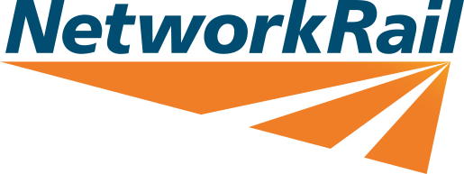
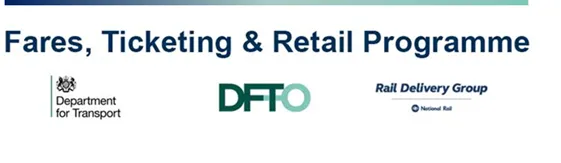
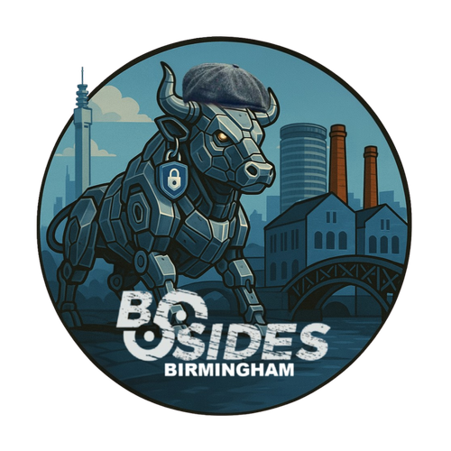
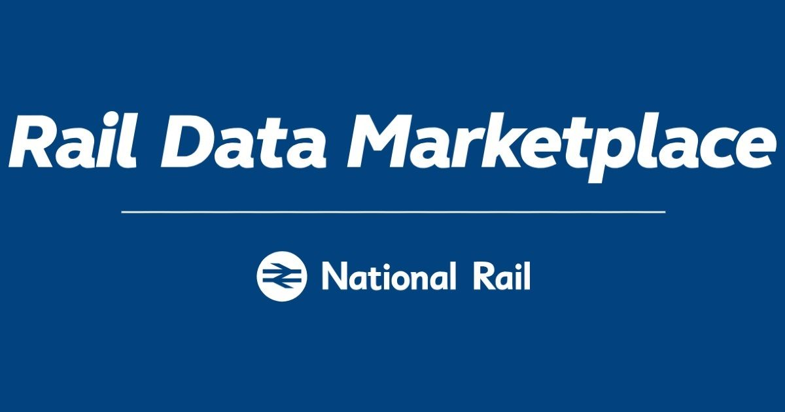
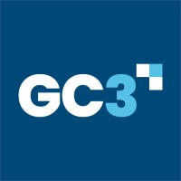

Professional Certifications


I build high-assurance software and secure Critical National Infrastructure (CNI). My work focuses on deterministic logic systems, low-level protocol auditing, and responsible vulnerability disclosure.


Architecting and deploying a high-performance, offline routing engine written in Rust. The system processes complex public transit rules in under 60 milliseconds to provide real-time fare eligibility to passengers and staff, providing truth-based assurance without network connectivity.
Currently overseeing the enterprise pilot of the project to UK Train Operating Companies.
Authored an industry feature titled "The Machine Truth of Rail Ticketing," detailing the cryptographic validation of RSP6 Aztec barcodes, Optical Character Recognition signal-to-noise normalization, and the symmetric security boundaries underlying ITSO smartcard infrastructure.

Presented "From CSS to SysAdmin: CVSS 9.8 in National Education Infrastructure," detailing the technical discovery, blast radius, and coordinated government remediation of a systemic logic flaw. Discussed root-cause analysis and proactive patching before active exploitation.

Awarded 1st place for the initial Sentinel prototype, successfully competing against enterprise ticketing providers - including Assertis - and teams from Google. The solution demonstrated deterministic offline routing, outperforming traditional cloud-dependent API architectures.

Discovered a critical CVSS 9.8 logic flaw exposing over 3 million UK student records. Refused unauthorized data access and executed a strict, 7-month coordinated disclosure under verbal agreement with the NCSC and the Government Cyber Coordination Centre. Recognized by the government as an "exemplar of vulnerability disclosure" and awarded an NCSC Challenge Coin.
Audited the UK's national rail routing datasets and identified systemic gaps in how time-based fare restrictions are parsed, finding grey areas in which passengers could be unfairly criminalized for travelling on a purchased itinerary.
A zero-allocation, memory-mapped Rust engine executing topological graph searches. Optimized timetable UID traversal from O(N) to O(log N) via compiled binary indexing, yielding sub-60ms resolution times on mobile edge hardware.
This architecture is currently being used as the foundation for the Sentinel Eligibility Checker project, allowing passengers and staff to feel assured knowing that the information they are received is backed by truth.